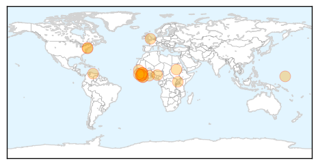

30 Day Trends
Web: 12 alerts, 0 warnings
Twitter: 4 alerts, 0 warnings
Top Articles:
- 1.000
- Health Alert: Ebola Virus Hits Hard At West Africa
- 1.000
- Could The Ebola Outbreak Spread To Europe Or The U.S.? : Shots
- 1.000
- Ebola, a threatening disease for health workers
- 1.000
- Ebola epidemic said to be ′out of control′
- 1.000
- Ebola, a threatening disease for health workers - Guinea
- 1.000
- Could The Ebola Outbreak Spread To Europe Or The U.S.?
- 0.999
- Sierra Leone cancels school exams as Ebola cases rise - News
- 0.999
- Doctors Without Borders labels Ebola outbreak as out of control
- 0.999
- Ebola: EU raises Ebola funding in West Africa to €1.9m
- 0.999
- 32 New Cases Reported In 'Totally Out Of Control' Ebola Outbreak
- 0.998
- Ten more Ebola cases confirmed in Liberia
- 0.998
- Health: Ebola kills 46 in Sierra Leone
- 0.998
- Ebola kills 46 in Sierra Leone
- 0.997
- WHO reduces Ebola death toll in Sierra Leone
- 0.996
- Lab Results Negative For West African Ebola Virus In Valencia After Health Authorities Activate Alert
- 0.996
- Ten more Ebola cases in Liberia
- 0.996
- WHO changes reporting method for Ebola deaths, reduces death toll in Sierra Leone
- 0.993
- Ebola virus disease, West Africa – update
- 0.992
- Exams cancelled amid Ebola crisis - Africa
- 0.988
- Is West Africa’s Ebola outbreak about to spiral out of control?
- 0.953
- UNICEF-Liberia Ebola Virus Disease: SitRep #28, 25 June 2014 - Liberia
- 0.917
- UN Resident Coordinator, Lancet Commission pay courtesy call on President Koroma
Top Tweets:
-
No tweets found for Jun 25, 2014
Web/News Articles

Tweets

Article Locations
Article Confidences